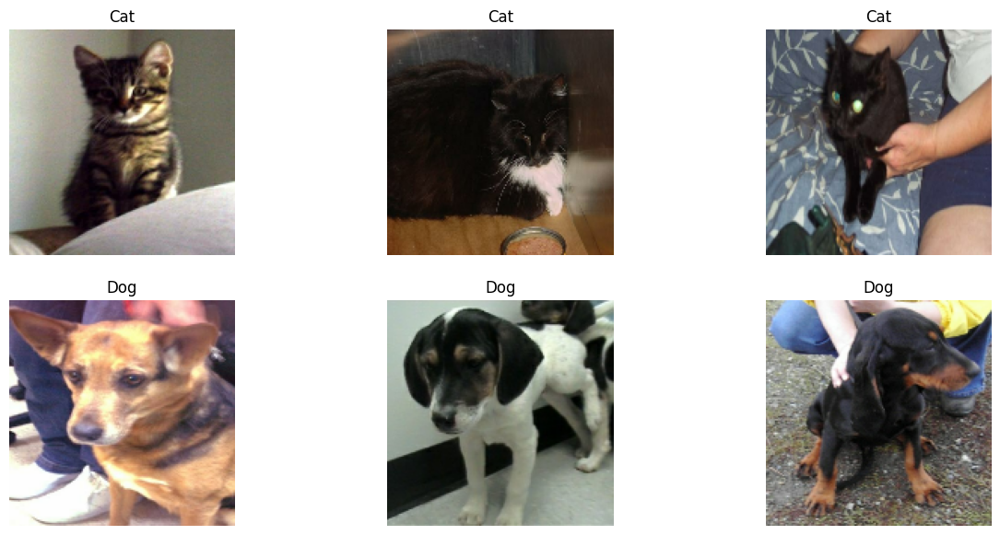

HW5: Using Machine Learning Models in Image Classification
week 9
homework
Author
Emily Shi
Published
March 4, 2024
Image Classification Using Various Machine Learning Models
Part 1: Loading Packages and Obtaining Data
In this tutorial, we will look at how different machine learning algorithms uses image classification to distinguish between pictures of dogs and cats.
We will feed data through Tensorflow Datasets and classify images in Keras. Tensorflow Datasets allow us to organize operations on training, validation, and test datasets. Additionally, manipulating and augmenting our datasets allow each of the models to adopt and learn patterns more efficiently. Lastly, we will use transfer learning by incorporating pre-trained models to perform new tasks for us, which simplifies the process.
To run the models in this tutorial, we will enable a GPU runtime to speed the processes.
We begin by installing the latest version of keras in addition to importing the necessary packages.
!pip install keras --upgrade
Requirement already satisfied: keras in /usr/local/lib/python3.10/dist-packages (2.15.0)
Collecting keras
Downloading keras-3.0.5-py3-none-any.whl (1.0 MB)
━━━━━━━━━━━━━━━━━━━━━━━━━━━━━━━━━━━━━━━━ 1.0/1.0 MB 6.6 MB/s eta 0:00:00
Requirement already satisfied: absl-py in /usr/local/lib/python3.10/dist-packages (from keras) (1.4.0)
Requirement already satisfied: numpy in /usr/local/lib/python3.10/dist-packages (from keras) (1.25.2)
Requirement already satisfied: rich in /usr/local/lib/python3.10/dist-packages (from keras) (13.7.1)
Collecting namex (from keras)
Downloading namex-0.0.7-py3-none-any.whl (5.8 kB)
Requirement already satisfied: h5py in /usr/local/lib/python3.10/dist-packages (from keras) (3.9.0)
Requirement already satisfied: dm-tree in /usr/local/lib/python3.10/dist-packages (from keras) (0.1.8)
Requirement already satisfied: ml-dtypes in /usr/local/lib/python3.10/dist-packages (from keras) (0.2.0)
Requirement already satisfied: markdown-it-py>=2.2.0 in /usr/local/lib/python3.10/dist-packages (from rich->keras) (3.0.0)
Requirement already satisfied: pygments<3.0.0,>=2.13.0 in /usr/local/lib/python3.10/dist-packages (from rich->keras) (2.16.1)
Requirement already satisfied: mdurl~=0.1 in /usr/local/lib/python3.10/dist-packages (from markdown-it-py>=2.2.0->rich->keras) (0.1.2)
Installing collected packages: namex, keras
Attempting uninstall: keras
Found existing installation: keras 2.15.0
Uninstalling keras-2.15.0:
Successfully uninstalled keras-2.15.0
ERROR: pip's dependency resolver does not currently take into account all the packages that are installed. This behaviour is the source of the following dependency conflicts.
tensorflow 2.15.0 requires keras<2.16,>=2.15.0, but you have keras 3.0.5 which is incompatible.
Successfully installed keras-3.0.5 namex-0.0.7
import osos.environ["KERAS_BACKEND"] ="jax"import kerasfrom keras import utils, datasets, layers, modelsimport matplotlib.pyplot as pltimport numpy as npimport jax.numpy as jnpimport tensorflow_datasets as tfds
import jaxjax.devices()
[cuda(id=0)]
!nvidia-smi
Mon Mar 11 04:12:05 2024
+---------------------------------------------------------------------------------------+
| NVIDIA-SMI 535.104.05 Driver Version: 535.104.05 CUDA Version: 12.2 |
|-----------------------------------------+----------------------+----------------------+
| GPU Name Persistence-M | Bus-Id Disp.A | Volatile Uncorr. ECC |
| Fan Temp Perf Pwr:Usage/Cap | Memory-Usage | GPU-Util Compute M. |
| | | MIG M. |
|=========================================+======================+======================|
| 0 Tesla T4 Off | 00000000:00:04.0 Off | 0 |
| N/A 43C P0 26W / 70W | 105MiB / 15360MiB | 3% Default |
| | | N/A |
+-----------------------------------------+----------------------+----------------------+
+---------------------------------------------------------------------------------------+
| Processes: |
| GPU GI CI PID Type Process name GPU Memory |
| ID ID Usage |
|=======================================================================================|
+---------------------------------------------------------------------------------------+
The following creates the datasets for training, validation, and testing. The dataset is the pipeline that feeds data to a machine learning model. Datasets are used when it is not necessarily practical to load all data into memory.
# all of the following provided in the instructionstrain_ds, validation_ds, test_ds = tfds.load("cats_vs_dogs",# 40% for training, 10% for validation, and 10% for test (the rest unused) split=["train[:40%]", "train[40%:50%]", "train[50%:60%]"], as_supervised=True, # Include labels)print(f"Number of training samples: {train_ds.cardinality()}")print(f"Number of validation samples: {validation_ds.cardinality()}")print(f"Number of test samples: {test_ds.cardinality()}")
Downloading and preparing dataset 786.67 MiB (download: 786.67 MiB, generated: 1.04 GiB, total: 1.81 GiB) to /root/tensorflow_datasets/cats_vs_dogs/4.0.1...
Dataset cats_vs_dogs downloaded and prepared to /root/tensorflow_datasets/cats_vs_dogs/4.0.1. Subsequent calls will reuse this data.
Number of training samples: 9305
Number of validation samples: 2326
Number of test samples: 2326
WARNING:absl:1738 images were corrupted and were skipped
The dataset contains images of different sizes, so we will resize them to a fixed size of 150x150 pixels.
# all of the following provided in the instructionsresize_fn = keras.layers.Resizing(150, 150)train_ds = train_ds.map(lambda x, y: (resize_fn(x), y))validation_ds = validation_ds.map(lambda x, y: (resize_fn(x), y))test_ds = test_ds.map(lambda x, y: (resize_fn(x), y))
Here, we will rapidly read the data.
batch_size determines how many data points are gathered from the directory at once.
from tensorflow import data as tf_databatch_size =64train_ds = train_ds.batch(batch_size).prefetch(tf_data.AUTOTUNE).cache()validation_ds = validation_ds.batch(batch_size).prefetch(tf_data.AUTOTUNE).cache()test_ds = test_ds.batch(batch_size).prefetch(tf_data.AUTOTUNE).cache()
Working with Datasets
To visualize our dataset, we will write a function that creates a two-row visualization. The first row of the plot contains three random pictures of cats while the second row contains three random pictures of dogs.
import randomimport tensorflow as tffrom tensorflow import data as tf_dataimport matplotlib.pyplot as plt
def two_row_vis(dataset, num_rows, num_cols, num_samples): fig, axes = plt.subplots(num_rows, num_cols, figsize=(15, 7))# take method gets a piece of the dataset, specifically one batch (or 32# images with labels) from the training data# skip takes the element at the nth value (being num_samples, which is# a random integer between 1 and 10) awayfor i, (images, labels) inenumerate(dataset.skip(num_samples).take(1)): cat_count =0 dog_count =0for image, label inzip(images, labels):# row of catsif label ==0and cat_count < num_cols: axes[0, cat_count].imshow(image.numpy().astype("uint8")) axes[0, cat_count].set_title('Cat') axes[0, cat_count].axis("off") cat_count +=1# row of dogselif label ==1and dog_count < num_cols: axes[1, dog_count].imshow(image.numpy().astype("uint8")) axes[1, dog_count].set_title('Dog') axes[1, dog_count].axis("off") dog_count +=1if cat_count == num_cols and dog_count == num_cols:break plt.show()
two_row_vis(train_ds, 2, 3, random.randint(1,10))

Check Label Frequencies
Now, we will create an iterator called labels_iterator.
# provided in instructionslabels_iterator= train_ds.unbatch().map(lambda image, label: label).as_numpy_iterator()
Using labels_iterator, we will compute the number of images in the training data with label 0 (which represents the cats) and label 1 (which represents the dogs).
cat_count =0dog_count =0for label in labels_iterator:if label ==0: # Cat label cat_count +=1elif label ==1: # Dog label dog_count +=1print("Number of images with label 0 (Cat):", cat_count)print("Number of images with label 1 (Dog):", dog_count)
Number of images with label 0 (Cat): 4637
Number of images with label 1 (Dog): 4668
As we can see, there are more images of dogs than cats in this dataset.
The baseline machine learning model is the model that always guesses the most frequent label. Because the most frequent label is label 1 which is 4668, the baseline model would be 4668 out of the total number of images, or (4668/(4637+4668))%, or 50.2% accuracy.
Model 1: Basic Sequential Model
Now, we create a keras.Sequential model using some of the layers discussed in class: two Conv2D layers, two MaxPooling2D layers, one Flatten layer, two Dense layer, and one Dropout layer.
The accuracy of my model stabilized between roughly 57.8% and 60.8% during training. Evidently, this model is able to consistently achieve at least 55% validation accuracy.
Compared to the baseline of 50.2%, this model performed at least 7% better.
Overfitting occurs when the training accuracy is much higher than the validation accuracy. In model1, overfitting does occur as the training accuracy may be at least ten percent higher than the validation accuracy, especially for later epochs.
Model 2: Using Data Augmentation (Flip and Rotation)
This next model will involve data augmentation layers. Data augmentation refers to the practice of including modified copies of the same image in the training set.
For example, flipped or rotated images are still the same image in the content they contain. Therefore, incorporating transformed versions of the image in the training process help the model learn these invariant features of the input images.
We begin by creating a keras.layers.RandomFlip() and keras.layers.RandomRotation() layer.
for images, labels in train_ds.take(1):# Assuming you want the first image from the batch image = images[0] label = labels[0]
# Add the image to a batch.image = tf.cast(tf.expand_dims(image, 0), tf.float32)
RandomFlip()
Then, we create a plot of the original image and two more copies of that image where RandomFlip() has been applied.
The accuracy of my model stabilized between roughly 58.7% and 71% during training. Evidently, this model is able to consistently achieve at least 60% validation accuracy. Scores of 70% and above were also achieved.
Compared to the validation accuracy of model1, model2 performed roughly the same as the lowest and highest accuracies were about 59-60% and 70-71%, respectively.
In model2, overfitting does not occur as the training accuracies are consistently lower than the validation accuracies.
Model 3: Using Data Preprocessing
This next model will involve a preprocessing layer. This makes simple transformations to the input data.
For example, it may be the case that the original input image has pixels with RGB values between 0 and 255, but some models train faster with RGB values normalized between 0 and 1 (grayscale), or possibly between -1 and 1. Scaling the weights still result in mathematically identical situations. However, if the scaling process was handled prior to the training process, more of the training energy can be spent on the actual signal in the data rather than on the adjusting of the weights to the data scale.
For example, flipped or rotated images are still the same image in the content they contain. Therefore, incorporating transformed versions of the image in the training process help the model learn these invariant features of the input images.
# all of the following found in the instructionsi = keras.Input(shape=(150, 150, 3))# The pixel values have the range of (0, 255), but many models will work better if rescaled to (-1, 1.)# outputs: `(inputs * scale) + offset`scale_layer = keras.layers.Rescaling(scale=1/127.5, offset=-1)x = scale_layer(i)preprocessor = keras.Model(inputs = i, outputs = x)
The accuracy of my model stabilized between roughly 77.5% and 82.3% during training. Evidently, this model is able to consistently achieve at least 80% validation accuracy.
Compared to the validation accuracy of model1, model3 performed at least 18% better, with the lowest accuracies performing roughly 19% better and the highest accuracies performing roughly 21% better.
In model3, overfitting does not occur as the training accuracies are overall lower than the validation accuracies.
Model 4: Using Transfer Learning
For this last model, we will be using a pre-existing model for the task of distinguishing between cats and dogs. Unlike the previous models, this one will not be trained from scratch. Instead, we will incorporate a pre-existing “base model” into the full model, which is ultimately what will be trained.
The benefit of using a pre-existing model is that someone might already have trained a model that performs a similar task, and this model could have already learned relevant patterns. This should lead us to seeing increased validation accuracy.
The following downloads MobileNetV3Large and configures it aas a layer to be included in this model.
# all of the following provided in instructionsIMG_SHAPE = (150, 150, 3)base_model = keras.applications.MobileNetV3Large(input_shape=IMG_SHAPE, include_top=False, weights='imagenet')base_model.trainable =Falsei = keras.Input(shape=IMG_SHAPE)x = base_model(i, training =False)base_model_layer = keras.Model(inputs = i, outputs = x)
/usr/local/lib/python3.10/dist-packages/keras/src/applications/mobilenet_v3.py:512: UserWarning: `input_shape` is undefined or non-square, or `rows` is not 224. Weights for input shape (224, 224) will be loaded as the default.
return MobileNetV3(
Downloading data from https://storage.googleapis.com/tensorflow/keras-applications/mobilenet_v3/weights_mobilenet_v3_large_224_1.0_float_no_top_v2.h5
12683000/12683000 ━━━━━━━━━━━━━━━━━━━━ 0s 0us/step
model4 will make use of MobileNetV3Large through incorporating base_model and IMG_SHAPE.
model4 = models.Sequential([# following two are the data augmentation layers from Part 3 layers.RandomFlip("horizontal_and_vertical", input_shape=(150, 150, 3)), # Horizontal flip augmentation layers.RandomRotation(0.2), # Random rotation augmentation base_model_layer, # constructed above layers.GlobalMaxPool2D(), # additional layer in between Layer 3 and 4 layers.Dense(2) # Layer 4: Dense(2) layer to perform the classification])
Train the model for 20 epochs and plot the history of the accuracy on both the training and validation sets.
Clearly, there is a lot of complexity hidden in the base_model_layer. There are 1,922 parameters that are trainable out of almost three million total parameters, which is a significantly smaller ratio of trainable parameters compared to the other models.
To train a model on a dataset:
history = model4.fit(train_ds, epochs=20, validation_data=validation_ds)
The accuracy of my model stabilized between roughly 93.2% and 96.7% during training. Evidently, this model is able to consistently achieve at least 93% validation accuracy.
Compared to the validation accuracy of model1, model4 performed at least 35% better, with the lowest and highest accuracies performing roughly 35% better.
In model4, overfitting does not occur as the training accuracies are consistently lower than the validation accuracies.
Part 6: Accuracy Score on TEST Data
The most performant model is model4which consistently achieves at elast 93% validation accuracy!
Now, we will evaluate the accuracy of this model on the unseen test_ds.